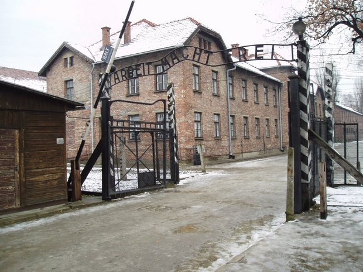

AUSCHWITZ-BIRKENAU. NIEMIECKI NAZISTWOSKI OBÓZ KOCENTRACYJNY I ZAGŁADY

Podobnie jak Stare Miasto w Krakowie, Kopalnia Soli w Wieliczce została wpisana w 1978 r., jako jeden z pierwszych 12 obiektów na świecie. W 2013 roku wpis rozszerzono o Kopalnię Soli w Bochni i Zamek Żupny w Wieliczce, zmieniając nazwę wpisu. Królewskie Kopalnie Soli w Wieliczce i Bochni są wpisem seryjnym.
Pokłady soli kamiennej w Wieliczce eksploatowane są od XIII w. Kopalnia rozciąga się na 9 poziomach i liczy 360 km chodników, w których znajdują się wyrzeźbione w soli ołtarze, posągi i inne dzieła sztuki; etapy pasjonującej pielgrzymki ku przeszłości tego zakrojonego na szeroką skalę przedsięwzięcia przemysłowego.
Strefę Zabytkową Kopalni w Bochni stanowią 3 szyby: Sutoris (z połowy XIII w.), Campi (z połowy XVI w.) i Trinitatis (z początku XX w.) oraz 9 poziomów, usytuowanych pod powierzchnią. Cenną spuściznę kultury duchowej bocheńskich górników stanowią podziemne kaplice i miejsca kultu religijnego.